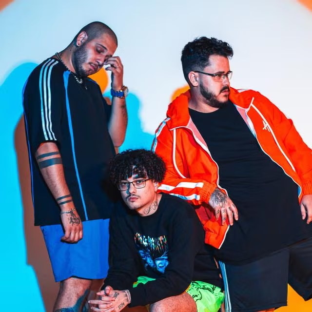

Mais que músicas, histórias que viram som.
7 Minutoz é um grupo musical brasileiro criado em 2012, conhecido por transformar histórias de animes, jogos, filmes e séries em músicas autorais no estilo rap e trap nerd. O projeto se destacou rapidamente no YouTube, conquistando milhões de fãs no Brasil e no exterior.
Com letras intensas, narrativas épicas e produções de alta qualidade, o 7mz se tornou uma das maiores referências da música geek nacional, unindo entretenimento, emoção e cultura pop.
O projeto começou de forma independente no YouTube e cresceu organicamente graças à originalidade das composições e à forte conexão com o público geek. Com o tempo, o 7mz alcançou milhões de inscritos, músicas com centenas de milhões de visualizações e reconhecimento como um dos maiores canais musicais do Brasil.
Hoje, o grupo mantém uma produção constante e evolui musicalmente a cada lançamento, explorando novas sonoridades sem perder sua essência.
“Minha maior batalha sempre foi contra quem eu fui ontem.”
Lucas ART
"O peso do mundo
Eu tenho que suportar
Mesmo que eu não consiga
Eu vou tentar
E não existe nada
Que me faça parar
É isso que me faz um herói
Por controlar
Aquilo que eles temem
Ou por fazer
O que mais ninguém faz
Sempre vou estar
Entre os que não se rendem"
7 minutoz - É isso que faz um héroi

Você pode conhecer mais sobre o 7mz clicando aqui